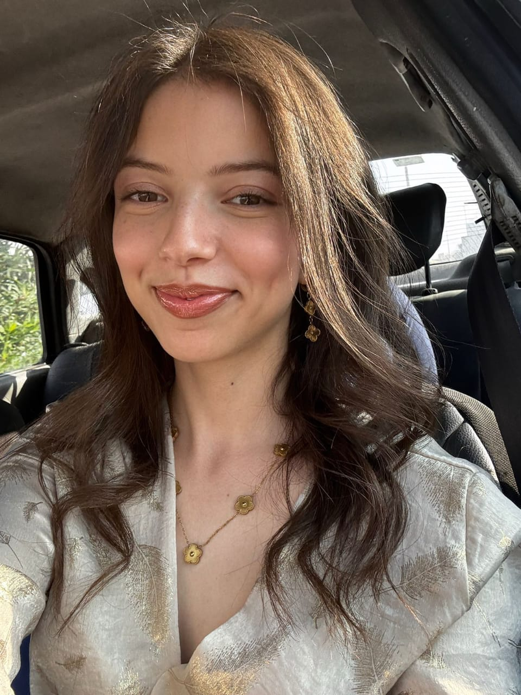

|
 |
Salma OuerghiÉtudiante en Informatique | Développeuse Web
📍 Tunis, Tunisie |
Passionnée par le développement web et l'innovation, je suis à la recherche d'une opportunité pour appliquer ma curiosité, ma rigueur et ma créativité à la conception d'applications modernes et centrées sur l'utilisateur.
| Langages | Frameworks / Outils | Autres |
|---|---|---|
| HTML, CSS, JavaScript, Python, Java | Angular, Git, VS Code, MySQL | Conception UML, Algorithmique, Travail en équipe |
| 2024 - 2027 | Licence en Informatique |
| 2023 - 2024 | Baccalauréat Scientifique |
| Langue | Niveau |
|---|---|
| Arabe | Langue maternelle |
| Français | Courant |
| Anglais | Intermédiaire |
Programmation, design web, lecture, voyages, apprentissage des langues et culture numérique.
© 2025 Salma — Portfolio personnel